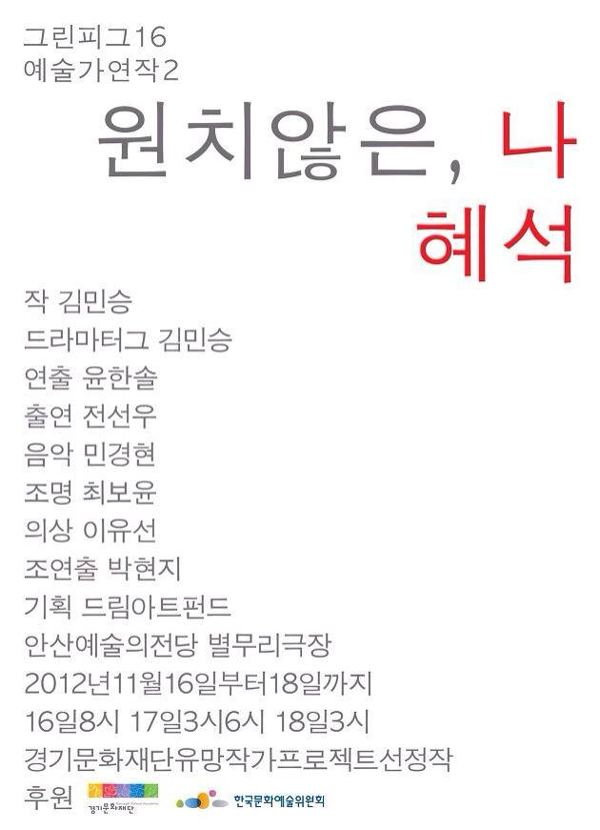

그린피그 > 아카이브 > 원치않은, 나혜석
김민승 작, 윤한솔 연출

2012.11.16–18 / 안산예술의전당 2012.12.5–9 / 연극실험실 혜화동1번지 2013.4.4–7 / 인천아트플랫폼 2013.5.24, 27 / 밀양 동강중학교, 강화 내가초등학교 - 신나는 예술여행
이전: 〈텃밭 킬러〉 | 다음: 〈나무는 신발가게를 찾아가지 않는다〉 아카이브로 돌아가기 | 아무 작품이나
발행일 2026.11.9